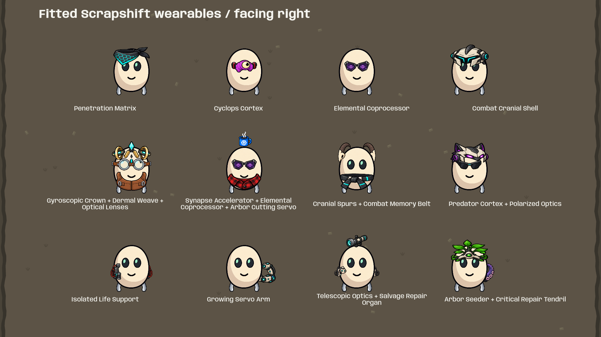
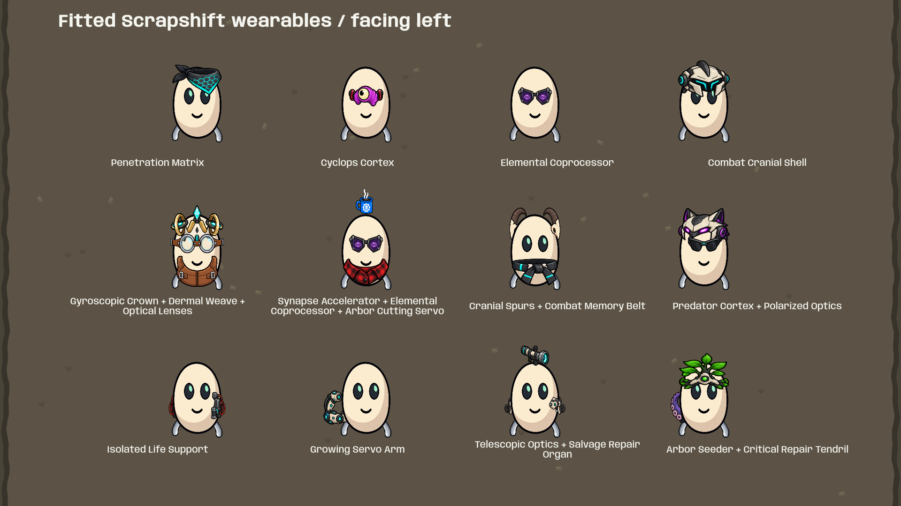

64 individual size and placement corrections, covering floating headgear, small eye replacements, uneven horns and detached side attachments. All 181 remaining layers now use authored body-origin registrations. The four approved beanie, jacket, goggles and coffee canvases are preserved.
Branch: codex/appearance-parity · New build: RegisteredWearables · 365 tests passed.
These are native Unity captures from the updated build. Existing Scrapshift wearable artwork was reused and fitted; this pass did not generate new PNGs. The 181 atlas parts retain their individually authored dimensions, including existing width/height adjustments. Slot priority, depth and acquisition behavior are unchanged.

Switch between the previous and updated native galleries. Each page keeps the same items in the same order.
185 wearable layers across 178 items: four approved full canvases plus 181 atlas parts. All visible art is Scrapshift art. Good existing fits were retained. The six gallery pages show each item alone; the larger scene checks twelve selected combinations and their mirrored walking pose. This is not an exhaustive visual test of every possible item combination.
Per-piece registrations · Explicit fit corrections · Previously approved four items